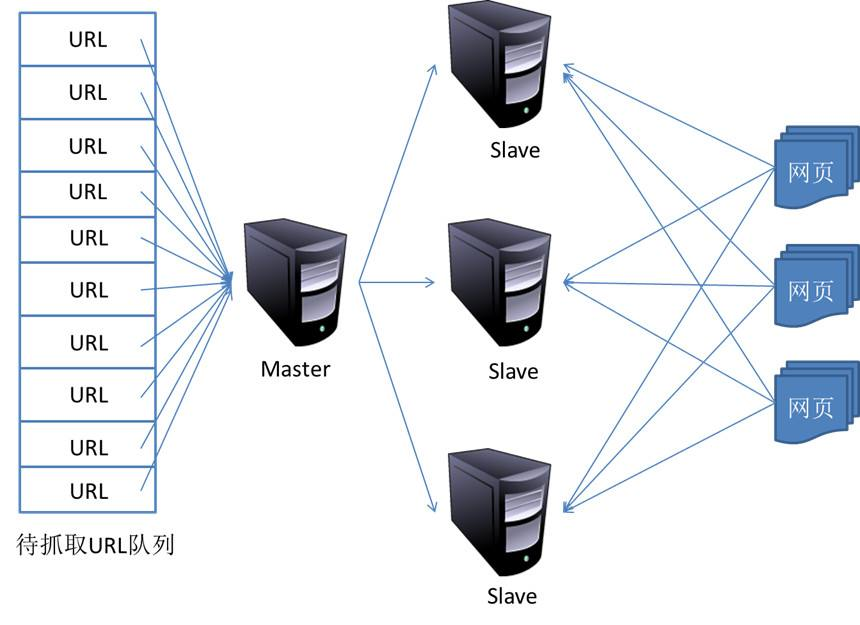

16. 分布式爬虫原理
- 在前面我们已经掌握了Scrapy框架爬虫，虽然爬虫是异步多线程的，但是我们只能在一台主机上运行，爬取效率还是有限。
- 分布式爬虫则是将多台主机组合起来，共同完成一个爬取任务，将大大提高爬取的效率。
16.1 分布式爬虫架构
回顾Scrapy的架构：
- Scrapy单机爬虫中有一个本地爬取队列Queue，这个队列是利用deque模块实现的。
- 如果有新的Request产生，就会放到队列里面，随后Request被Scheduler调度。
- 之后Request交给Downloader执行爬取，这就是简单的调度架构。
我们需要做的就是在多台主机上同时运行爬虫任务

16.2 维护爬取队列
- 关于爬取队列我们自然想到的是基于内存存储的Redis。它支持多种数据结构，如：列表、集合、有序集合等,存取的操作也非常简单。
- Redis支持的这几种数据结构，在存储中都有各自优点：
- 列表(list)有lpush()、lpop()、rpush()、rpop()方法，可以实现先进先出的队列和先进后出的栈式爬虫队列。
- 集合(set)的元素是无序且不重复的，这样我们可以非常方便的实现随机且不重复的爬取队列。
- 有序集合有分数表示，而Scrapy的Request也有优先级的控制，我们可以用它来实现带优先级调度的队列。
16.3 如何去重
- Scrapy有自动去重，它的去重使用了Python中的集合实现。用它记录了Scrapy中每个Request的指纹（Request的散列值）。
- 对于分布式爬虫来说，我们肯定不能再用每个爬虫各自的集合来去重了，因为不能共享，各主机之间就无法做到去重了。
- 可以使用Redis的集合来存储指纹集合，那么这样去重集合也是利用Redis共享的。
- 每台主机只要将新生成Request的指纹与集合比对，判断是否重复并选择添加入到其中。即实例了分布式Request的去重。
16.4 防止中断
- 在Scrapy中，爬虫运行时的Request队列放在内存中。爬虫运行中断后，这个队列的空间就会被释放，导致爬取不能继续。
- 要做到中断后继续爬取，我们可以将队列中的Request保存起来，下次爬取直接读取保存的数据既可继续上一次爬取的队列。
- 在Scrapy中制定一个爬取队列的存储路径即可，这个路径使用
JOB_DIR变量来标识，命令如下：scrapy crawl spider -s JOB_DIR=crawls/spider - 更多详细使用请详见官方文档：http://doc.scrapy.org/en/latest/topics/jobs.html
- 在Scrapy中，我们实际是把爬取队列保存到本地，第二次爬取直接读取并恢复队列既可。
- 在分布式框架中就不用担心这个问题了，因为爬取队列本身就是用数据库存储的，中断后再启动就会接着上次中断的地方继续爬取。
- 当Redis的队列为空时，爬虫会重新爬取；当队列不为空时，爬虫便会接着上次中断支处继续爬取。
16.5 架构实现
- 首先实现一个共享的爬取队列，还要实现去重的功能。
重写一个Scheduer的实现，使之可以从共享的爬取队列存取Request
幸运的是，我们可以下载一个现成
Scrapy-Redis分布式爬虫的开源包，直接使用就可以很方便实现分布式爬虫。